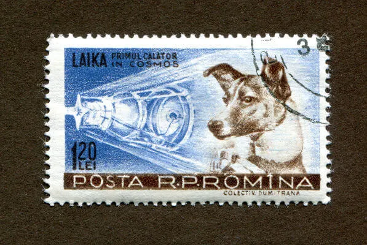

O outro lado da guerra fria: A guerra espacial

Sputnik1, primeiro satélite lançado pela humanidade em 1957.
A corrida espacial foi resultado da Guerra Fria, o nome que damos para o
conflito
político-ideológico que marcou o mundo após a Segunda Guerra Mundial. Essa disputa foi travada pelos EUA
e
URSS, países que saíram como vencedores da Segunda Guerra e que procuraram depois desse conflito
garantir a
sua hegemonia no mundo.
A ascensão da União Soviética na guerra incomodou os Estados Unidos, que temerosos em perder a sua
influência na Europa Ocidental, passaram a incentivar uma retórica de polarização contra os soviéticos.
Ainda na década de 1940, já foram realizadas ações pelo governo americano para garantir a sua
influência.
A manutenção da influência norte-americana na Europa Ocidental era importante para manter a sua economia
aquecida depois do fim da guerra. Considera-se como ponto de partida da Guerra Fria um discurso de Harry
Truman realizado em 1947. Logo, a retórica de polarização foi incorporada pelos soviéticos e, então, os
dois
países começaram a se organizar para garantir seus interesses em suas zonas de influência.
A Guerra Fria estendeu-se de 1947 a 1991 e, nesse período, a disputa entre as duas nações ocorreu em
vários
níveis. Na diplomacia, cada nação atuava para garantir seus interesses internacionalmente;
economicamente,
buscava-se a hegemonia sobre o outro; militarmente, buscava o domínio pela maior quantidade de
armamentos
possível.
Na área da tecnologia, essa disputa também aconteceu com cada país querendo apresentar mais inovações em
relação ao outro. Isso levou as duas nações a investirem na educação e realizar pesados investimentos em
estudos científicos. Naquele momento, o avanço científico permitiu a abertura de uma nova fronteira: o
espaço.
Até então desconhecido, o espaço começou a ser explorado no período da corrida espacial, e americanos e
soviéticos disputavam quem faria as maiores descobertas. Assim, foram lançados satélites artificiais,
sondas
espaciais, expedições tripuladas para o espaço, até que, finalmente, foi enviada uma viagem tripulada
para a
Lua.
“Dominar” o espaço era algo fundamental dentro da disputa que era travada entre as duas nações, pois
aquele
que conquistasse essa nova fronteira da humanidade evidenciaria seu papel de potência. Explorar o espaço
também se mostrava útil militarmente, pois permitiria monitorar os movimentos feitos pelo inimigo e
abria
uma nova possibilidade de ataque em caso de guerra. Para saber mais sobre, leia: Guerra Fria.
Resumo da corrida espacial
Uma série de acontecimentos marcou os quase vinte anos de corrida espacial, mas alguns desses
acontecimentos ganharam maior notoriedade e contaremos abaixo um resumo destes.

A cadela Laika foi enviada para o espaço com a Sputnik 2 e faleceu dias depois pelo superaquecimento
da
nave.
O primeiro grande marco da corrida espacial foi um feito soviético. No dia 4 de outubro de 1957, às
22h28m, no horário de Moscou, foi lançado o Sputnik 1, o primeiro satélite artificial a ficar na
órbita
da Terra. Alguns minutos depois, o satélite começou a emitir os primeiros sinais de rádio e o
Sputnik 1
permaneceu em órbita por 22 dias.
O feito foi ressaltado tanto na imprensa soviética, quanto na imprensa internacional – incluindo a
americana. O satélite soviético era uma esfera metálica feita de alumínio, que possuía 58 de
centímetros
de diâmetro e pesava 83,6 kg. O segundo satélite enviado pelos soviéticos trouxe outra grande
inovação:
o envio do primeiro ser vivo para o espaço.
Em 4 de novembro de 1957, foi lançado o Sputnik 2 que possuía 508 kg e transportou a cadela Laika
para o
espaço. A cadela foi encontrada nas ruas de Moscou e morreu 10 dias depois, em resultado do
superaquecimento da estrutura. Ao todo, os soviéticos enviaram dez satélites sob a designação de
Sputnik. Fonte: Mundo Educação.